Префектура Кумамото · Амакуса · где остановиться
Gosoku no Kutsu: рёкан на Амакусе, где у каждой виллы своя горячая купель
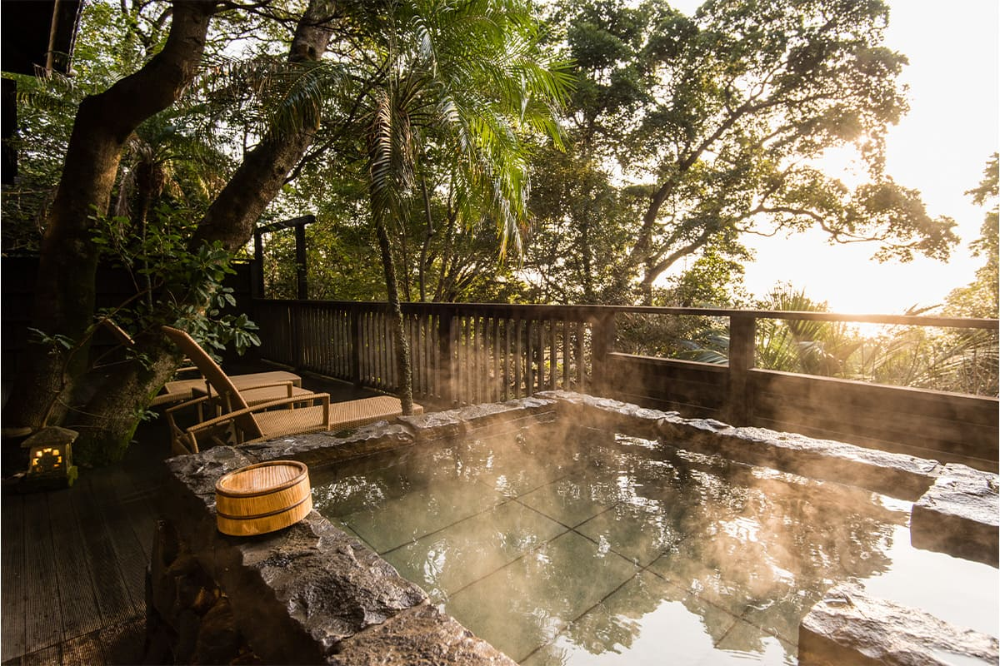
На островах Амакуса, у берега Восточно-Китайского моря, стоит рёкан, ради которого люди едут через всю Японию. Добраться сюда непросто, и именно поэтому уезжать отсюда так не хочется.
Рёкан
Пять пар обуви
Тот, кто хоть немного интересуется японскими гостиницами, при слове Gosoku no Kutsu невольно вздыхает от зависти. Хотя на слух название совсем не похоже на имя рёкана: «госоку-но куцу» значит «пять пар обуви». Полностью оно начинается со слов «Исияма рикю», «загородный дворец на каменной горе». Рёкан стоит на Амакусе, архипелаге у западного берега префектуры Кумамото, и сам он ни на что не похож: то ли японская гостиница, то ли курортный отель.
Если при словах «Амакуса» и «пять пар обуви» вам вспомнились путевые заметки, вы хорошо знаете японскую литературу. В эпоху Мэйдзи пятеро литераторов отправились в путешествие по Кюсю, а потом печатали в газете очерки о поездке под общим названием «Пять пар обуви». Рёкан назван в их честь.
Писатель, автор многих книг о рёканах, приехал сюда вместе с другом, сценаристом и уроженцем Амакусы. Оба знают толк в гостиницах, и обоим здесь было что рассказать.
Дорога
Амакуса далеко
Тогда Амакуса была краем света. Сегодня до неё тоже неблизко. По суше от города Кумамото ехать на автобусе или машине около двух с половиной часов. Морем можно добраться из Нагасаки: паром идёт из порта Моги в порт Томиока на Амакусе, и вместе с дорогой на машине путь займёт около часа.
Быстрее всего лететь самолётом местной авиакомпании Amakusa Airlines из Фукуоки или Кумамото. Полёт длится около получаса, но от аэропорта Амакусы до рёкана ещё минут сорок на машине. К этому нужно прибавить дорогу до Кумамото или Нагасаки, так что путь выходит долгим.
Поэтому одной ночи здесь мало, лучше остаться хотя бы на две. Смотреть есть на что и в самом рёкане, и вокруг него.
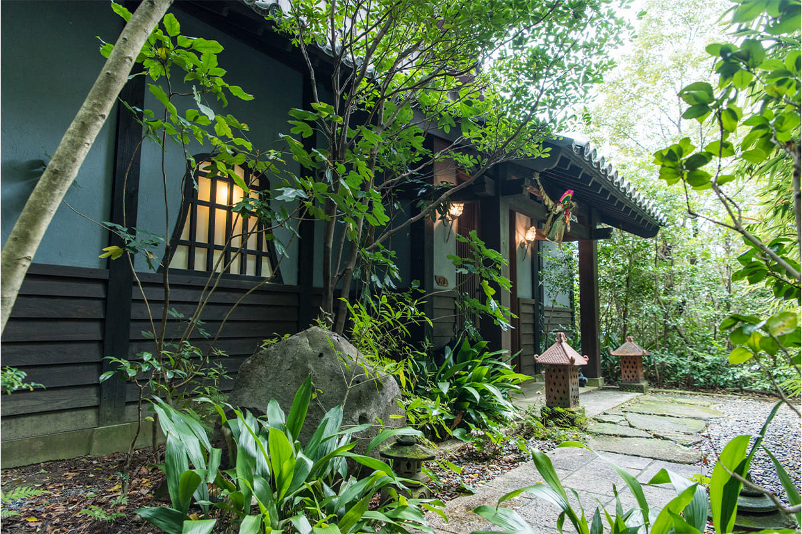
Виллы
Купель на троих и закат над морем
Рёкан построен на холме у моря и разделён на три корпуса-виллы: A, B и C. Всего в них 15 номеров. Планировка и вид из окон везде разные, но в каждом номере есть своя купель под открытым небом с водой из горячего источника.
Общих бань в рёкане нет, поэтому любителям горячей воды стоит выбирать номер прежде всего по купели.
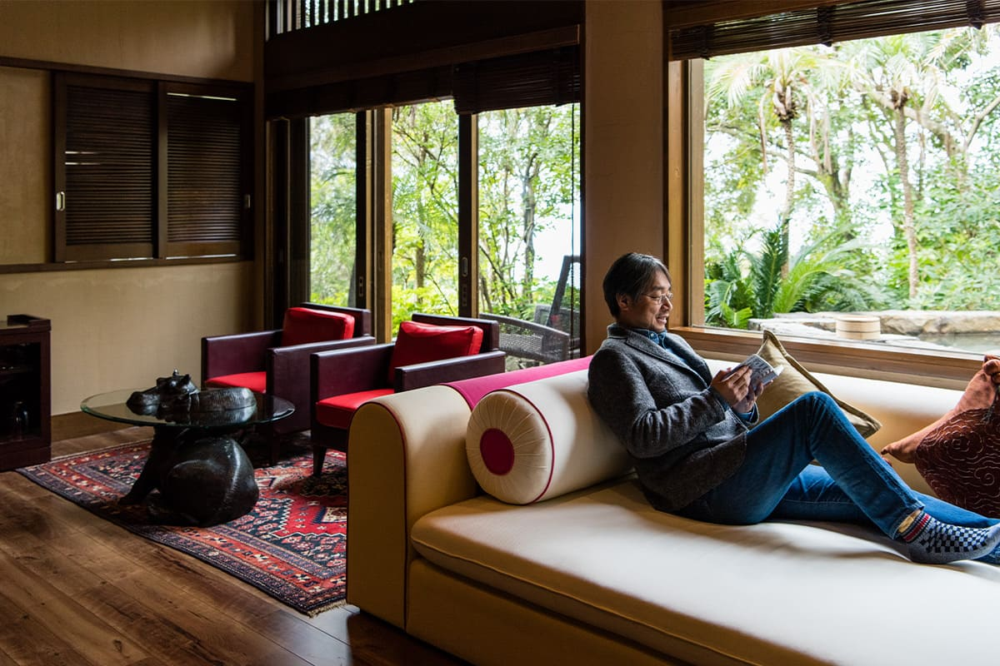
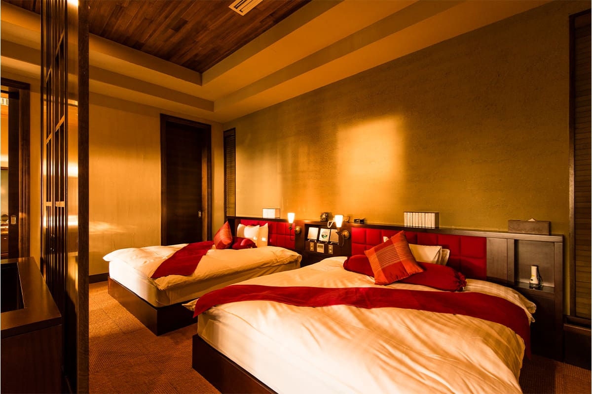
Писателю больше всего нравится C-1, самый высокий номер в рёкане. На закате можно сидеть в большой купели и смотреть, как солнце садится в Восточно-Китайское море. Рядом устроен душ прямо в саду, и мыться под открытым небом очень приятно. Впрочем, это дело вкуса: говорят, у других номеров есть свои преданные поклонники, а кто-то из гостей уже прожил во всех пятнадцати.
Больше всего рёкан отличается от других японских гостиниц масштабом. Номера здесь больше 80 квадратных метров, а в купели свободно помещаются трое взрослых. К тому же вода идёт прямо из источника, без подогрева и без разбавления. Источник называется онсэн Симода, вода в нём гидрокарбонатно-натриевая. Атмосфера купелей в разных виллах разная, так что заядлые любители онсэнов могут на второй вечер переехать в другой номер.
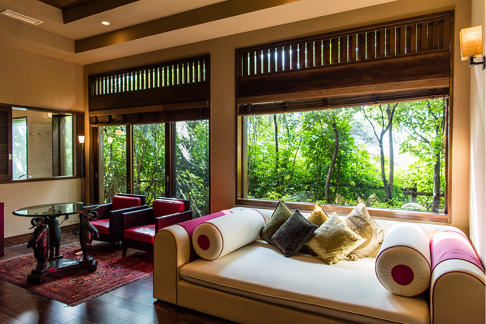
Ужин
Хоралы и каменный котёл
Купели это лишь половина того, за чем сюда едут. Ужинают здесь не в номере, а в ресторане в отдельном здании. У каждой виллы свой ресторан и даже своё меню: виллы A и B живут своей жизнью, вилла C своей, так что Gosoku no Kutsu вернее считать двумя рёканами под одной крышей. Неизменно одно: гости едят в отдельных кабинетах.
В ресторане «Тэнсё» для гостей виллы C по коридору тихо звучит григорианский хорал, а в конце коридора стоит статуя Мадонны с Младенцем. Всё устроено как в церкви. Кабинеты расположены вдоль коридора со стороны моря, и за окном во время ужина видно воду.
Может показаться, что религии здесь слишком много. Но Амакуса неотделима от истории христианства в Японии, когда-то здесь тайно хранили веру скрытые христиане, и почувствовать это на месте очень важно.
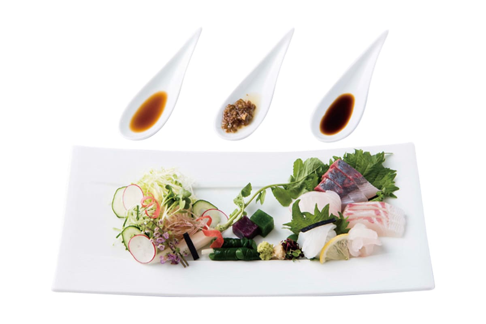
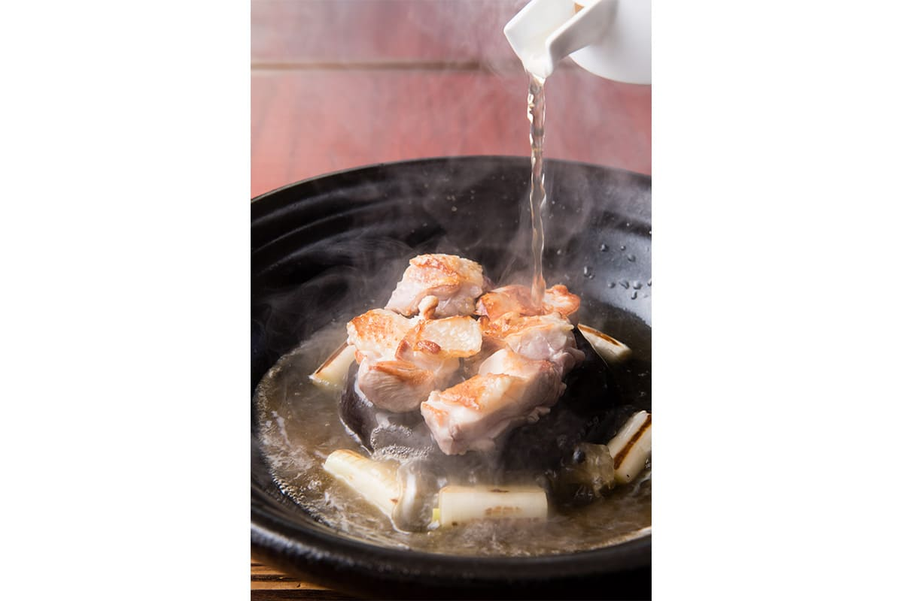
Вокруг Амакусы одно море, поэтому о рыбе и моллюсках и говорить нечего. Кроме них здесь подают местные марки мяса: говядину «Амакуса куро-уси» от чёрных быков и курицу «Амакуса дайо».
Больше всего рёкан прославил каменный котёл с курицей «Амакуса дайо». Он так хорош, что ради него одного стоит сюда приехать. Когда бульон выливают на камень прямо за столом, вверх поднимается облако пара, и это отдельное удовольствие.
Здесь думают не только о вкусе, но и о том, как порадовать гостя и сделать ужин запоминающимся. Для этого есть открытая терраса с видом на Восточно-Китайское море. Весной, летом и осенью она особенно хороша, но и в прохладные месяцы сидеть там очень уютно.
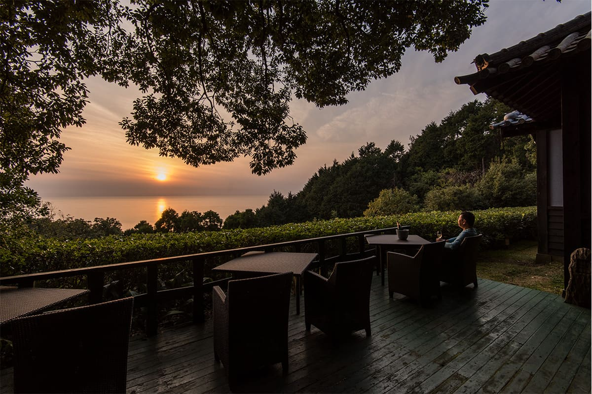
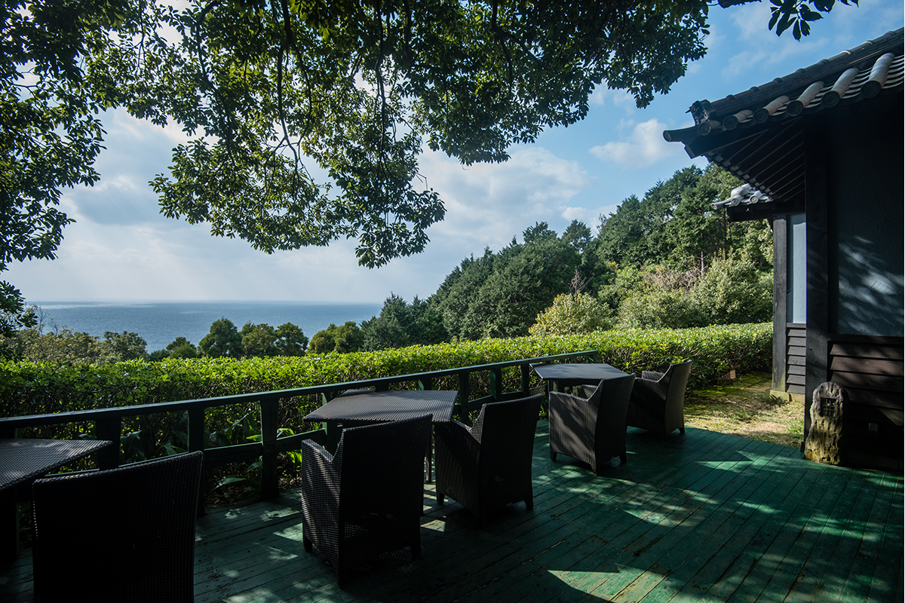
Бокал игристого на закате ни на что не променяешь. По желанию на террасе подают и завтрак: лёгкая утренняя еда, свежий воздух и морской ветер.
Совсем иное настроение в библиотеке и баре: здесь полумрак и тени, как в старом японском доме. Эти контрасты и составляют характер Gosoku no Kutsu: пространство и время незаметно превращаются в лабиринт.
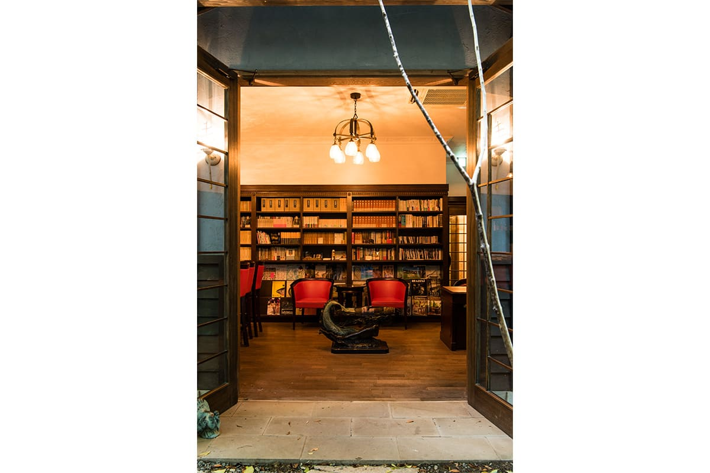
Завтрак
Ставрида из рыбацкой деревни
Писатель считает, что завтрак это финал всего пребывания в рёкане, и лучше всего запоминаются те гостиницы, где местные продукты подают не только вечером, но и утром.
Здесь его больше всего покорила ставрида, вяленая в мирине. Её делает вручную женщина из рыбацкой деревни Сакицу на Амакусе. Рыба провялена лишь наполовину, мясо остаётся пышным, а лёгкая корочка пахнет так, что хочется увезти несколько штук домой.
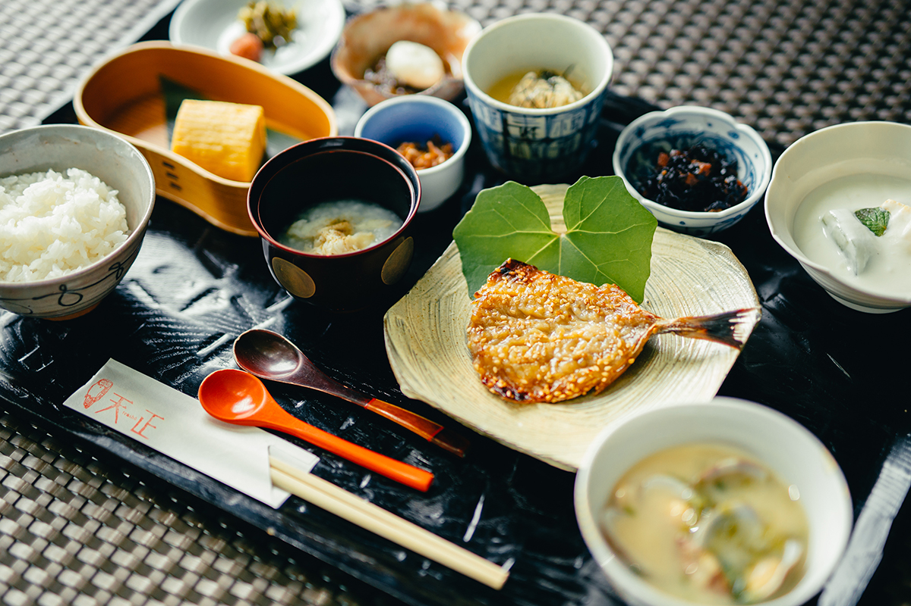
Соус из морского салата аоса, собранного у берегов Амакусы, готовят в рёкане. Им поливают рис или рисовую кашу, и запах моря сразу поднимается к носу. Для утра вкус в самый раз: свежий и лёгкий.
Завтракают, как и ужинают, в ресторане. Гости виллы C могут выбрать и европейский завтрак на террасе с видом на далёкое море. Бронировать время не нужно: приходите, когда удобно. Последний заказ на завтрак принимают в 10:00, на вилле C в 11:00.
Острова Амакуса называют не японскими и даже не кюсюскими, а «Амакусой в Азии», и сам рёкан описывает себя так же: «не Кюсю и не Япония, а Амакуса посреди Азии». Территория в 3,3 гектара, на ней всего 15 отдельных домиков, а интерьеры собирают всё экзотическое, что есть на Амакусе. Гостиницу называют рёканом, который дал людям повод ехать на Амакусу, и многие гости возвращаются сюда снова.
Косметичка
Кимоно, сотканное заново
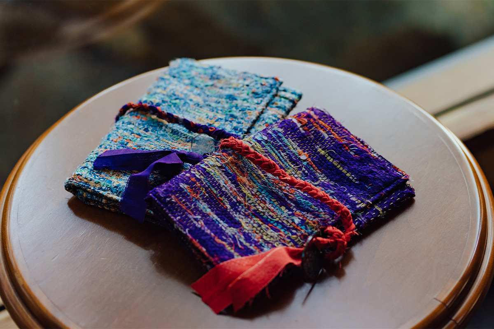
В 2022 году рёкан отмечал 20 лет и к юбилею начал продавать собственную дорожную косметичку. Поводом стал закон о переработке пластика, вступивший в силу в апреле 2022 года. Он касается и одноразовых зубных щёток, бритв и прочих мелочей, которые раздают в гостиницах. Обязательным закон стал только для крупных предприятий, но рёкан решил сделать свой шаг сам.
В рёкане считают, что гости всё чаще будут возить туалетные принадлежности с собой, а не брать то, что лежит в номере. С красивой и удобной косметичкой приятно и собирать чемодан, и раскладывать вещи у раковины. Есть и ещё одна мысль: после долгих месяцев пандемии, когда никуда не ездили, такая вещь может стать поводом для бережного, осознанного путешествия.
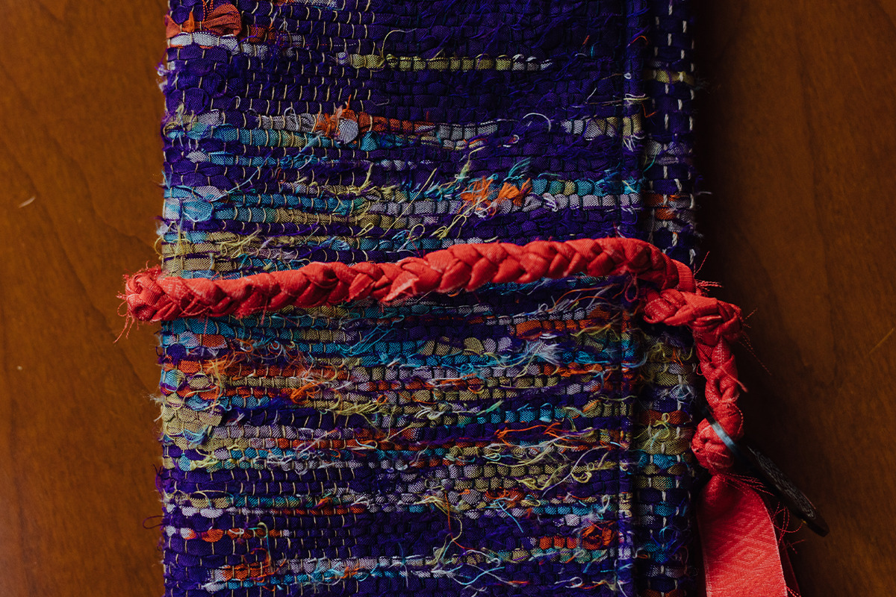
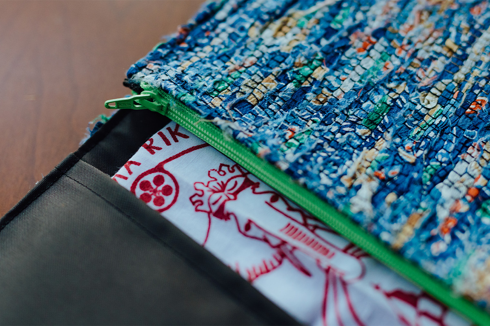
Ткань для косметичек сделала фукуокская мастерская 414textile. Это «сакиори», японская техника, родившаяся из нежелания выбрасывать хорошие вещи: отслужившие кимоно и одежду режут на полосы, скручивают в нить и ткут из неё новое полотно. Прежние цвета и узоры смешиваются и дают совсем другой рисунок. А кимоно, которые долго берегли, и в нити остаются мягкими, ткань приятно трогать.
О пользе тоже подумали. Изнутри косметичка подбита плотным водонепроницаемым нейлоном, есть резинки для зубной и обычной щётки и застёжка-липучка, чтобы мелочи не выпадали. Кармана два, на молнии и без, так что поместятся и косметика, и лекарства. Чтобы влезло побольше, косметичку стягивают шнурком.
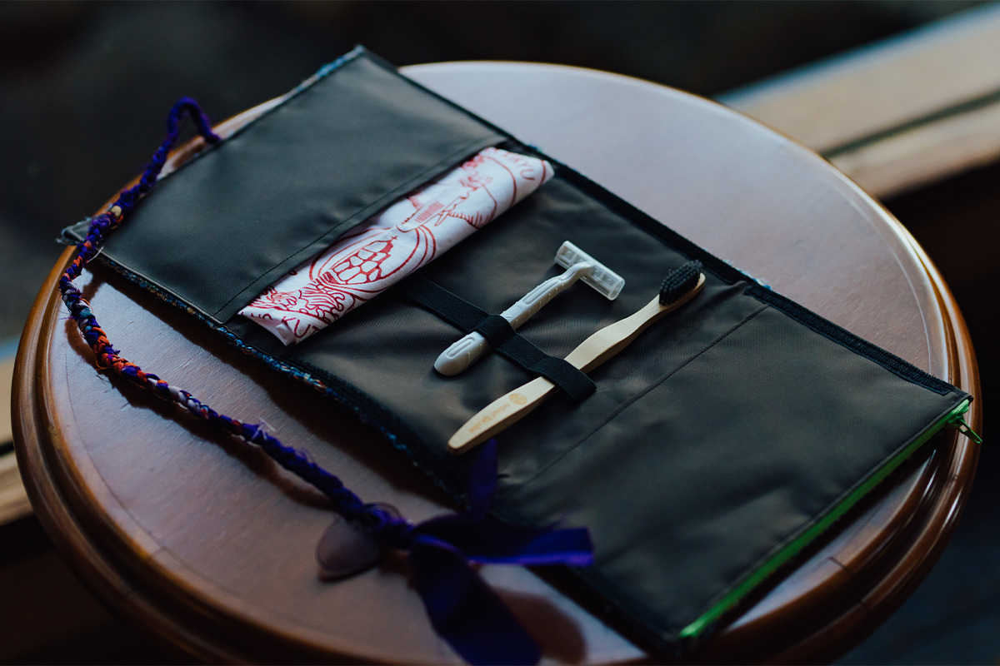
Мастерская ткёт на «такабата», старинном японском ручном станке. Управляющая рёканом видела, как ткань рождается на нём нить за нитью.
«Я из поколения, которое выросло среди фабричных вещей. Мы носили готовую одежду и никогда не задумывались, из чего сделана ткань. Когда я смотрела, как на старом станке переплетаются основа и уток и из них получается полотно, я впервые по-настоящему поняла, что такое ткань. Косметичка это просто футляр для мелочей, но за ней стоит японская культура ткачества и привычка ничего не выбрасывать. Возьмите её в руки и посмотрите сами»
управляющая рёканом
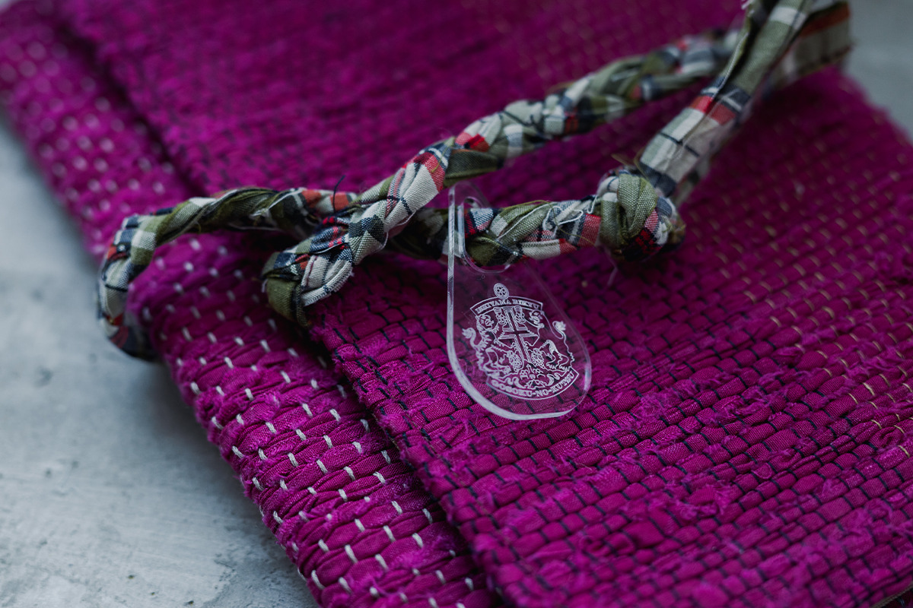
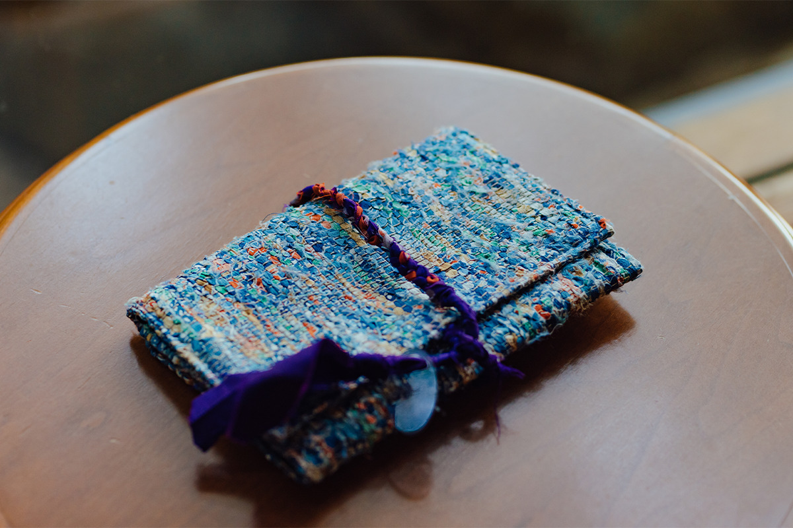
Амакуса далеко, и поэтому здесь легко потеряться в другом, непривычном мире. Каждый раз, уезжая отсюда, хочется оглянуться.
Gosoku no Kutsu
- Адрес
- префектура Кумамото, Амакуса, Амакуса-мати, Симода-кита, 2237
- Телефон
- +81 969-45-3633
- Номера
- 15 (вилла A 6, вилла B 4, вилла C 5), в каждом купель с водой из горячего источника
- Заезд / выезд
- 15:00 / 11:00, вилла C до 12:00
- Цены / Вход
- с ужином и завтраком от 38 650 иен с человека (с налогом и сервисным сбором, данные 2023 года)
- Как добраться
- трансфер из аэропорта Амакусы и из портов Томиока, Ониикэ и Усибука по предварительной записи; на машине около 2 часов от развязки Мацубасэ скоростной дороги Кюсю
- Сайт
- rikyu5.jp
Фото: Ацуси Ямахира.